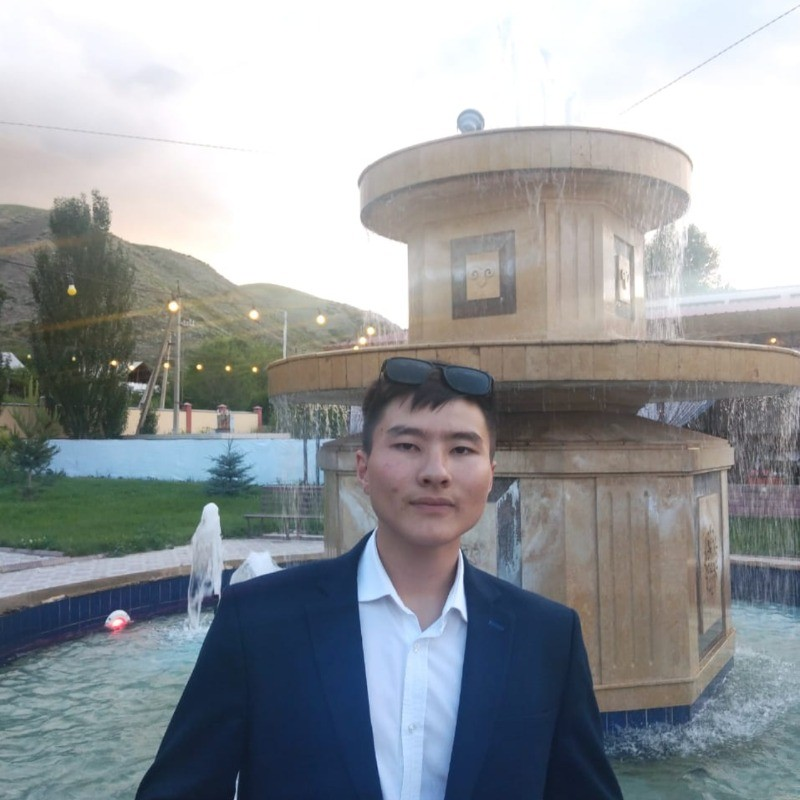

A brief overview of who I am and what i do
Hello I'm Arisbek Alikbaev
I'm passionate web developer and technology enthusiast with a deep interest in creating functional, aesthetically pleasing websites. Over the years, I have worked with numerous web technologies to bring ideas to life on the web. With experience in HTML, CSS, JavaScript, and various frameworks like React and Node.js, I love building engaging web applications that focus on user experience. Skills- HTML5 & CSS3
- JavaScript & ES6+
- React.js
- Node.js & Express
- Python & Django
- Version Control (Git & Github)
My hobbies
When I'm not coding, I enjoy exploring other creative outlets, such as:- Traveling and exploring new cultures
- Photography
- Reading tech blogs and staying up-to-date with the latest trends in technology.
- Playing guitar